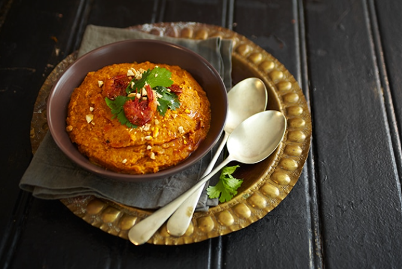

Acarajé e Vatapá
ingredientes:
Massa do Acarajé
3 cebolas grandes cebola
1/2kg de feijão fradinho (quebrado)
Sal a gosto
Massa do Vatapá
300 g de castanha de caju torrada
300 g de amendoim torrado
300 g de camarão seco
10 pães de sal amanhecidos
10 colheres de sopa de azeite de dendê
1 tomate
1 cebola
Cheiro verde (cebolinha, coentro, salsa) a gosto
1 caldo de camarão
1 pimentão
200 ml de leite
200 ml de leite de coco
Modo de preparo:
Massa do Acarajé
Em uma vasilha coloque o feijão na água de um dia para o outro.
As casquinhas irão separar do grão.
Retire os caroços e bata no liquidificador com a cebola picada e o sal.
Bata bastante e depois despeje em outra vasilha e continue mexendo bem, batendo com o auxílio de uma colher de pau, isso fará o acarajé ficar fofinho.
Após bater bastante frite-os em azeite de dênde e de oliva bem quentes.
Acarajé
Massa do Vatapá
Pique os pães e deixe amolecer no leite e no leite coco.
Depois bata no liquidificador essa mistura e reserve.
Bata no liquidificador a castanha, amendoim, camarão, junte aos pães e mexa.
Bata todos os temperos, menos o azeite de dendê.
Junte tudo em uma panela, coloque o sal e o azeite e leve ao fogo, mexendo até que solte do fundo da panela.

Vatapá